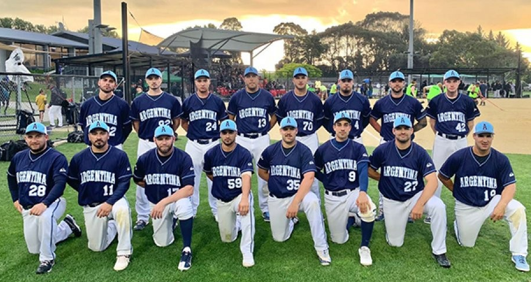
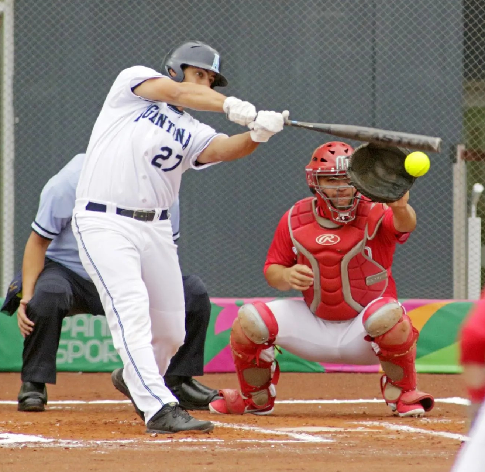

Softbol en Argentina
Bienvenidos a Softbol Argentina, un lugar donde te contamos como y donde se juega, este deporte que a tantos nos gusta y que tan poco se conoce.
Volver la princio de la paginaNuestros Servicios
Logros de la seleccion Argentina de Sofbol
Argentina ganó la Copa Mundial 2019, la medalla de oro en los Juegos Panamericanos de Lima 2019, y el Campeonato Panamericano 2022, recientemente disputado en la ciudad de Paraná, Entre Ríos.


Mejor bateador de la temporada y el campeonato mundial, realizado el año 2022, en el pais de Mexico